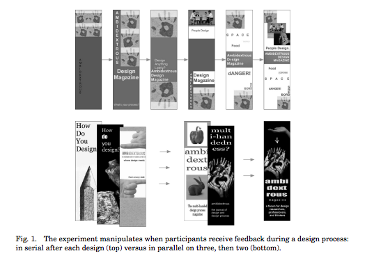

Use [Hypothesis](https://hypothes.is/) for discussion, Q&A, and additional examples or references to improve the material.
Idea Generation
Generating Ideas
- Generate ideas individually first
- Then come together as a group and brainstorm
- Write down everything on a board
After you collect information about the users and their goals, you'll have to identify a key **problem** that you're going to solve by building new software. Sometimes the problem will jump out at you; if so great. If not, you'll need to generate some ideas for problems to solve. That means reading and thinking about all the information you've collected, and then doing some idea generation. These slides talk about the **idea generation** process. You'll find this useful not just at this stage, but also for the next step in your project, when you'll have to generate ideas for solutions to the problem you've identified.
Note that **group brainstorming by itself is not the best approach**. It's been shown that you'll generate more ideas if you and your teammates first think about it privately, write down your individual ideas, then come together as a group to synthesize and build on each other's ideas. At top design firms like IDEO, if you don't bring in at least 5 ideas to every ideation meeting, then you won't last long as a designer.
IDEO's Rules for Brainstorming
- Be visual
- Defer judgment
- Encourage wild ideas
- Build on the ideas of others
- Go for quantity
- One conversation at a time
- Stay focused on the topic
IDEO has developed a list of rules for good brainstorming as a group. Read more about them [here](http://www.openideo.com/fieldnotes/openideo-team-notes/seven-tips-on-better-brainstorming).
Keep Multiple Alternatives Around



Don't fixate on one approach too early. Instead, keeping multiple alternatives on the table helps with all parts of the user-centered design process - design, implementation, and evaluation. Human beings need multiple alternatives to be creative and give good feedback. Here's some evidence.
* For individual designers: designers produce designs that are more creative and divergent when they keep multiple designs around throughout the iterative process. They also feel more confident about their designs, and the resulting final design is objectively better. (Dow et al, "[Parallel Prototyping Leads to Better Design Results, More Divergence, and Increased Self-Efficacy](http://dl.acm.org/citation.cfm?id=1879836)," TOCHI, 2010).
* For groups: when you're sharing ideas with a group, sharing multiple ideas is better than sharing your single favorite. The group is more likely to integrate parts of multiple ideas together, the group explore more of the design space, and others in the group provide more productive critiques. (Dow et al., "[Prototyping Dynamics: Sharing Multiple Designs Improves Exploration, Group Rapport, and Results](http://dl.acm.org/citation.cfm?id=1979359)," CHI 2011).
* For users: users give more constructive critiques when they're asked to use multiple alternative prototypes. (Tohidi et al, "[Getting the Right Design and the Design Right: Testing Many Is Better Than One](http://dl.acm.org/citation.cfm?id=1124960)," CHI 2006.)
Two reasons why multiple alternatives help. First, humans are better at comparing things than they are at judging the absolute value of one thing in isolation. Second, presenting only one idea puts a lot of emotional weight on it, so the idea's presenter feels obliged to defend it, and others feel reluctant to criticize it.
In the video, where does IDEO collect information from users and observation? What problems and goals do they discover from their observation?
Required video: [IDEO's design process (22 minutes)](https://www.youtube.com/watch?v=2Dtrkrz0yoU)
Answer this question: [IDEO Shopping Cart](https://docs.google.com/forms/d/e/1FAIpQLSfDRS30BKK9NbGYd30kVbY-YBy_l2h9m3Y8INwBrO0tZrzF7A/viewform?usp=sf_link)
Personas
Personas
- A model user that represents a user class
- Abstraction of actual users' behavior patterns
- Help you build empathy and stay grounded
Another way to turn your needfinding results into insights is to create **personas**. Personas model potential users by their representative classes and types. While personas are abstractions of actual users and therefore virtual, they are created on the basis of actual users' behavior patterns and motivation. [This article](https://www.smashingmagazine.com/2014/08/a-closer-look-at-personas-part-1/) from the Smashing Magazine gives a good primer on personas, along with some concrete examples.
Why is this a good idea? Your needfinding results are likely to tell you that different users have different needs, and it's easy to fall into the trap of designing something that satisfies everyone by adding in endless features. Of course it will result in an interface with poor usability. Personas help you stay grounded and focused on specific target users. By keeping realistic and distinct user groups in mind, it's possible to walk through the design idea from that persona's perspective. Knowing what a persona does, feels, and thinks, you can build empathy and gain a better understanding of the user's point of view. It's useful to ask the question of "How would Juho (name of your persona) use this?" when you make design decisions. This can serve as an initial verification stage. But note that this is not to say you can replace prototype testing involving actual users with personas.
Primary Elements in Personas
- Demographic Information
- Photo or Image
- Motivations, Beliefs, Preferences, and Goals
- Story or Scenario
What should a persona consist of? A persona should include (1) demographic information such as name, occupation, age, and gender, (2) a photo or an image to make the persona more lively and visual, (3) motivations, beliefs, preferences, and goals that can explain why the persona experiences the needs and challenges you identified in the needfinding stage, (4) story or a scenario that captures a task the persona has in mind, with surrounding context.